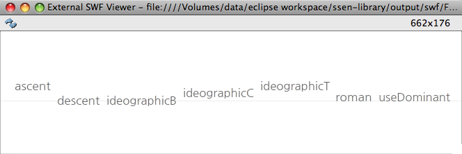
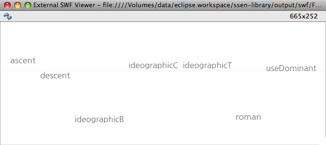
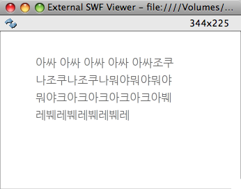
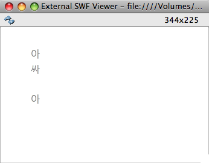

BaseLine 의 기준선을 어디로 정할 것인지 정함

// options options1 = [TextBaseline.ASCENT, TextBaseline.DESCENT, TextBaseline.IDEOGRAPHIC_BOTTOM, TextBaseline.IDEOGRAPHIC_CENTER, TextBaseline.IDEOGRAPHIC_TOP, TextBaseline.ROMAN, TextBaseline.USE_DOMINANT_BASELINE]; // formatting var ef : ElementFormat = new ElementFormat(fd, FONT_SIZE, COLOR); ef.alignmentBaseline = args[0];

BaseLine 을 밀거나 땡김
// options options1 = [TextBaseline.ASCENT, TextBaseline.DESCENT, TextBaseline.IDEOGRAPHIC_BOTTOM, TextBaseline.IDEOGRAPHIC_CENTER, TextBaseline.IDEOGRAPHIC_TOP, TextBaseline.ROMAN, TextBaseline.USE_DOMINANT_BASELINE]; options2 = [0, 10, 100, 0, 10, 100, 0]; // formatting var ef : ElementFormat = new ElementFormat(fd, FONT_SIZE, COLOR); ef.alignmentBaseline = args[0]; ef.baselineShift = args[1];

var fd : FontDescription = new FontDescription("nanumGothic CFF", FontWeight.NORMAL, FontPosture.NORMAL, FontLookup.EMBEDDED_CFF, RenderingMode.CFF, CFFHinting.HORIZONTAL_STEM);
var ef : ElementFormat = new ElementFormat(fd, FONT_SIZE, COLOR);
ef.breakOpportunity = BreakOpportunity.AUTO;
var content : Vector.<ContentElement> = new Vector.<ContentElement>();
content.push(new TextElement("아싸 아싸 아싸 아싸 아싸", ef));
content.push(new TextElement("조쿠나조쿠나조쿠나", ef));
content.push(new TextElement("뭐야뭐야뭐야뭐야", ef));
content.push(new TextElement("크아크아크아크아크아", ef));
content.push(new TextElement("붸레붸레붸레붸레붸레", ef));
var tb : TextBlock = new TextBlock(new GroupElement(content));
var tl : TextLine;
var old : TextLine;
var f : int;
var nextY : int = 50;
for (f = 0;f < 4; f++) {
tl = tb.createTextLine(old, 200);
if (tl == null) {
break;
}
tl.x = 50;
tl.y = nextY;
nextY += tl.height + 5;
addChild(tl);
old = tl;
}
br 에 대한 적용 범위를 지정하는 듯... 다른 문제점들을 발견할 수는 없었고 옵션을 ALL 로 했을때는 아래와 같은 현상이 벌어졌다. (모든 글자에 대해 내려쓰기 기회를 주는듯)
